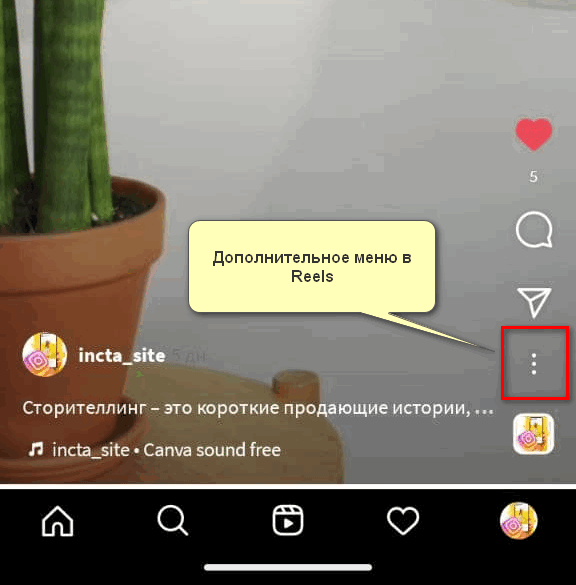
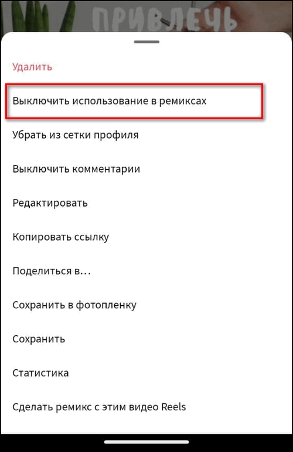
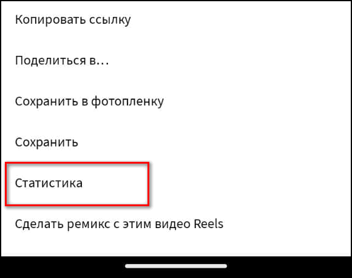
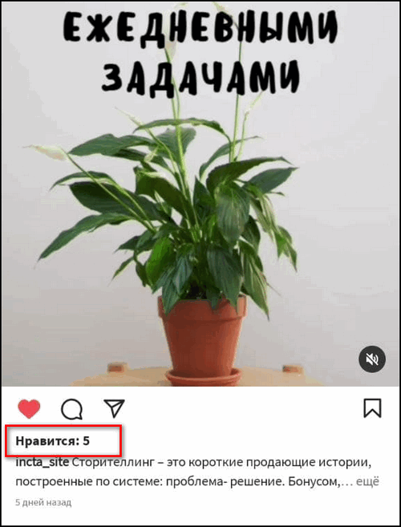
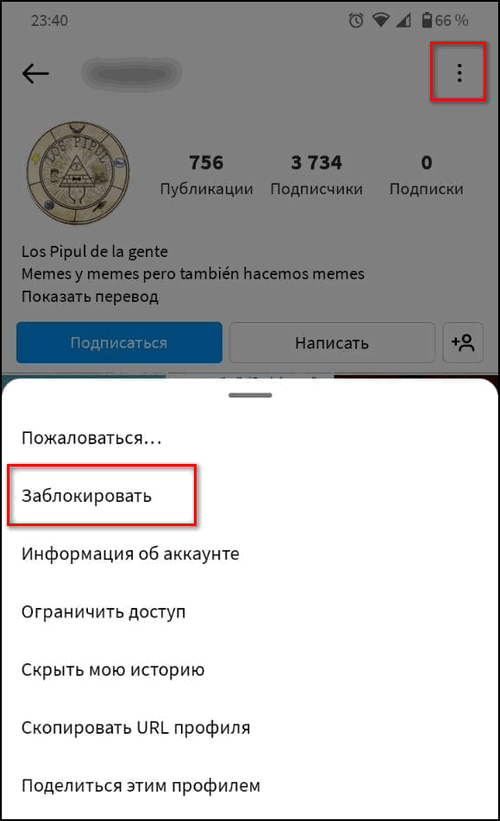

Кому видны Рилс в Инстаграме: настройки доступа

С введением нового раздела у авторов контента может появиться вопрос: видно ли кто смотрел Рилс? В отличие от Историй, в Reels отсутствует раздел: «Зрители», как и статистика.
Параметры приватности для Рилс в Инстаграме*
Размещая клип в общедоступном профиле, он виден всем посетителям страницы. Кроме этого, он продемонстрирован в «Рекомендациях» и если он станет популярен, то его увидят пользователи, несвязанные с аккаунтом автора. Такой вариант подходит создателям контента, которые планируют развивать блог. Стандартные настройки конфиденциальности для Рилс:
- выключить для использования в Ремиксах. Полное или частичное использование видеоклипа в чужих записях;
- запрет на видео из Ленты. Другие пользователи не смогут применять в своих клипах стандартные записи этого автора.
В остальном, настроить параметры приватности возможно через стандартное меню: «Конфиденциальность». Владельцу учетной записи нужно сделать страницу закрытой, чтобы никто кроме подписчиков не смог просматривать. Перейти к запрету использования в Ремиксах:
- Перейти в свой профиль – выбрать запись Reels.

- Открыть в полном формате – меню: «Еще» (три точки снизу).
- Выключить использование в Ремиксах.

Теперь другие авторы не смогут отвечать на видео или вставлять в свои ролики.
Кто может просматривать мои Reels
Определить, кому видны Рилс в Инстаграме* просто: нужно перейти к параметрам конфиденциальности и убедиться, что в профиле установлен «скрытый» статус. Если у пользователя общедоступный аккаунт или «Автор/Бизнес», то записи видны всем посетителям страницы.
Кроме этого, публикации попадают в рекомендации, где их может увидеть большее количество зрителей. С последними обновлениями в разделе Рилс появилась отдельная статистика. Её можно посмотреть в дополнительном меню:
- Открыть записанный Рилс – три точки снизу.

- Статистика – посмотреть, какое количество пользователей просматривали пост.
То же меню есть отдельно в «Настройках»: Статистика – Видео Reels. Этот показатель не указывает на отдельные страницы зрителей, а лишь отображает «Охват».
Как посмотреть зрителей Reels
С помощью лайков и уведомлений, можно узнать кто посмотрел в Reels. Такой способ подходит, если искомый пользователь поставил отметку «Мне нравится» или оставил комментарий. Как узнать по лайкам:
- Зайти в профиль – нажать по недавно опубликованному видео в Рилс.
- Снизу: «Нравится» и количество отметок – нажать по надписи.

- Перейти к просмотру пользователей, которые отметили публикацию.
Чтобы посмотреть комментарии: либо открыть видео в полном размере, либо нажать по соответствующей кнопке под видеозаписью.
Но такой способ неактуален, если искомый пользователь не оставил «Мне нравится» или комментариев. Вычислить это не получится официальным способом, потому что Инстаграм* запрещает получение данных других пользователей.
Как ограничить доступ к Рилс в моем профиле
Посмотреть, кто смотрел Рилс невозможно, но есть один способ, как ограничить доступ к видеоклипам – сделать аккаунт закрытым.
Нестандартные способы, как скрыть Рилс:
- размещать во втором профиле. То есть, автор записывает клипы не на основном аккаунте, а на том, где нет подписчиков или знакомых от которых нужно скрыть контент;
- скачивать видео и загружать в Истории. Раздел «Рилс» используется только для записи, после – нужно скачать видеоклип и опубликовать в Stories на аудиторию «Близкие друзья».
Но чтобы в самой социальной сети публиковать клипы с оригинального аккаунта и не бояться, что их могут увидеть посторонние:
- Зайти в «Настройки» - Конфиденциальность.
- Переместить ползунок на: «Закрытый аккаунт».
Переключаясь, автор потеряет статистику и возможность продвигать другие публикации. Но чтобы получить доступ к его контенту, новым посетителям и подписчикам придется подавать заявку, и ожидать, когда владелец подтвердит.
Как скрыть видео Рилс от посторонних
Если скрывать страницу для вас неподходящий вариант, то можно заблокировать отдельных посетителей аккаунта. В этом случае, зрители не смогут перейти в профиль, посмотреть Рилс, поставить лайк. Есть две меры ограничений в Инстаграме*:
- ограниченный доступ. Подписчик может просматривать контент, но для него заблокировано комментирование;
- заблокировать. Полностью ограничить доступ к учетной записи.
Последний вариант наиболее эффективен, потому что нежелательный посетитель страницы не сможет посмотреть контент. Как заблокировать:
- Зайти в профиль к человеку, которого нужно заблокировать.
- Нажать сверху три точки – Заблокировать.

- Подтвердить действие.
Этот пользователь не сможет просматривать Рилс, а также переходить к публикациям. Помимо этого, даже в «Рекомендациях» не появится скрытый видеоклип.